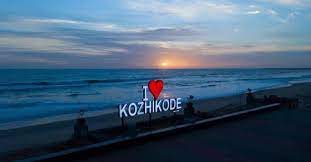

"TO MOVE,TO BREATHE,TO FLY,TO FLOAT,TO GAIN ALL WHILE YOU GIVE,TO ROAM THE ROADS OF LANDS REMOTE,TO TRAVEL IS TO LIVE"
Kerala, a state on India's tropical Malabar Coast, has nearly 600km of Arabian Sea shoreline. It's known for its palm-lined beaches and backwaters, a network of canals. Inland are the Western Ghats, mountains whose slopes support tea, coffee and spice plantations as well as wildlife. National parks like Eravikulam and Periyar, plus Wayanad and other sanctuaries, are home to elephants, langur monkeys and tigers.
MUNNAR

Munnar is such a beautiful place in Kerala, which cannot be portrayed in a single canvas. Everything and anything here will make us excited. The hills, the mist, the valleys, the streams, the waterfalls, tea plantations, rare flora and fauna.... It is a beautiful tea town in Idukki district of Kerala easily accessible from Kochi and Coimbatore. The gorgeous hill station is ideally placed in the South Western Ghats of India. With an area of around 557 sq km, Munnar in Devikulam Taluk is the largest panchayat in Kerala. Munnar got its name from its strategic location at the confluence of three rivers – Muthirapuzha, Nallathanni and Kundala Rivers. 'Moonu' means 'three' and 'Aru' means 'river'. The region is placed at a height of around 1,500 m to 2,695 m above sea level and was once the summer capital of the British in South India. Later it was developed for cultivating tea plants. The beautiful sights of acres and acres of lush green tea plantations will make us realize that we have at last reached Munnar and of course the place is so much known for its tea estates. It always carries the remnants of history of tea cultivation in Kerala. Neelakurinji or Strobilanthus has special status in the tourism map of this fascinating destination. The flower which blooms once in twelve years attracts lots of tourists from all over the world. Eravikulam National Park and the Nilgiri Tahr is considered to be the icon of tourism in Munnar. The national park is also famous for its Neelakurinji population. In 2006, the place witnessed the rush of tourist both domestic and international to sight the rare flowers. Now we have to wait till 2018, to watch the same rush, to see the gorgeous blooming of the flowers after long 12 years. At this place, you can witness the highest peak in South India, Anamudi. A trekking to this peak will no doubt energise you. When you stand yourself on the top of this peak, you will feel that you are standing very close to the sky and very soon you can touch the sky. The lovely Devikulam Lake; Kolukkumalai (the highest tea plantation in the country); the waterfalls like Lakkam, Attukal, Nyayamakad, Chinnakkal, Kuthumkal, Cheeyapara, Valara and Thoovanam; the 'cattle village' or Mattupetty etc makes Munnar the abode of nature. For shopaholics, this destination is a heaven – whether tea or spices. You can collect various spices from here like ginger, cardamom, pepper, cinnamon, coffee, clove, nutmeg etc. Don't miss the homemade chocolates here. Enjoy the white, dark, liqueur filled and chocolates with nuts. Munnar is blessed with lots of resorts and hotels, which will cater all your needs. Among these resorts you can also find affordable and cheap hotels, which suits you the most. All these hotels and resorts will offer you various packages like honeymoon packages, family packages etc and will help you to explore Munnar in a perfect way. MUNNAR - Fact File Altitude : 1600 Mts to 1800 Mts above sea level Tourist Season : August to May Clothing : Warm Clothes and Rain Gear Temperature : Min. 0 c - Max. 25 c
CALICUT
About Kozhikode Kozhikode, also known as Calicut, is a city located in the state of Kerala, India. It is a historically significant city with a rich cultural heritage and a prominent place in the history of South India. Here are some key aspects of Kozhikode. Being a part of the most beautiful state in India, Kozhikode has been ranked the second best city in India to reside in. Also known as Calicut, this beautiful city boasts of beautiful beaches, parks, temples, churches, sanctuaries, hillocks, museums, wildlife, sculptures, rivers and lots more. It is the prominent trade and commerce center in Kerala. Vasco Da Gama first set foot here in 1498 after which it became one of the most important ports in the Malabar region for the trade of spices, silk and other goods between European countries and India. The nature of land in Kozhikode is marshy. is the reason why the world also knows Kozhikode as Chullikkad, which means a ‘shrubby jungle’. The friendly nature of the people of Kozhikode, along with their love for traditional values is heart touching.